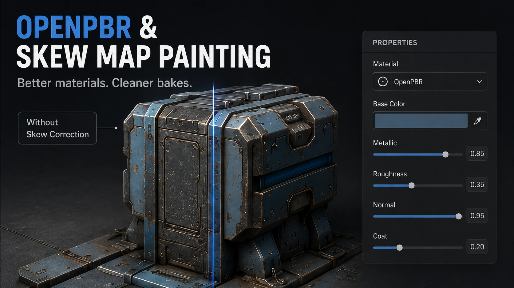
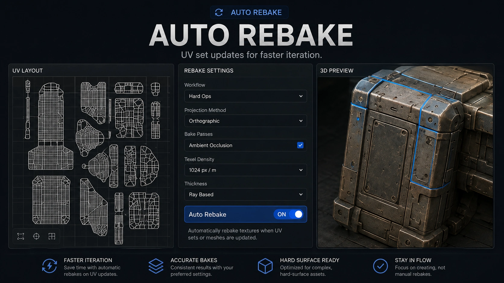

Substance 3D Painter 12.1 focuses on something working artists usually appreciate more than a flashy demo: removing repetitive cleanup.
The update adds support for OpenPBR, introduces Skew Map Painting, expands the baking workflow with Auto Rebake and adds a new hard-surface mode for automatic UV unwrapping.
None of these features suddenly replaces good modeling, thoughtful UV work or careful material design.
They do attack several familiar problems that can slow down an otherwise straightforward texturing job.
Why this update matters
Texture painting often becomes difficult before the painting even begins.
A hard-surface model may contain angled details that bake poorly. A revised mesh may require another full bake. Automatically generated UVs may waste space or orient shells awkwardly. Materials may need to move between applications that interpret shader properties differently.
Every one of those issues can be solved manually.
The problem is how often they need to be solved.
Painter 12.1 appears aimed at making that preparation and correction stage less stubborn.
OpenPBR creates a more portable material foundation
OpenPBR is an open material model developed to improve compatibility between tools and renderers.
Painter 12.1 adds initial support for the OpenPBR material definition, including a dedicated shader and relevant channels.
The practical benefit is consistency.
A material created in one application should require fewer interpretive gymnastics when it moves into another part of the pipeline. That matters for artists working across Painter, rendering software, real-time engines and other content-creation tools.
OpenPBR will not make every renderer produce an identical image automatically. Lighting, color management, implementation details and renderer-specific features still matter.
It does create a more standardized description of what the material is supposed to be.
For product visualization, furniture work and digital assets that may be reused in several destinations, that is a useful direction.

Skew Map Painting fixes directional baking errors
Skewing happens when baked details appear stretched or pulled because the projection direction does not suit the surface.
This often becomes visible around angled panels, chamfers, mechanical cuts and other hard-surface details.
Traditionally, correcting that may involve changing the low-poly mesh, adjusting the cage, editing vertex normals or rebuilding the bake setup.
Painter 12.1 allows artists to paint a skew-correction map directly inside the baking workflow.
That means the projection direction can be corrected locally using a painting process instead of forcing a larger modeling change.
This is especially useful when most of the bake is already good.
Rebuilding an entire asset because one small panel projects badly is the 3D equivalent of replacing a kitchen because one cabinet door sticks.
Local correction is the better tool.
Adobe also includes helper behavior such as edge protection to make the correction process easier around important boundaries.
Auto Rebake should make iteration less painful
Auto Rebake updates baked maps as relevant settings or skew corrections change.
The useful part is that Painter is designed to limit the rebake to affected UV areas when possible rather than recalculating everything.
That can make experimentation much faster.
An artist can paint a skew correction, see the affected area update and continue working without repeatedly opening the baking window and launching another complete bake.
This matters most on assets with larger texture sets or expensive baking operations.
A small prop may rebake quickly enough that the old process is only mildly annoying.
A complicated mechanical asset with several maps and texture sets can turn repeated rebaking into a coffee-based lifestyle.
Auto Rebake does not remove the need to inspect the result.
It reduces the friction between identifying a problem and testing a correction.
Hard-surface Auto UV targets mechanical assets
Painter already includes automatic UV tools, but version 12.1 introduces a mode aimed specifically at hard-surface geometry.
Adobe describes this mode as producing orthographically aligned layouts for mechanical assets.
That means shells should be oriented more logically for objects built from straight edges, manufactured panels and mechanical forms.
Clean orientation helps with:
- Directional materials - Wear generators - Brushed finishes - Decals - Pattern alignment - Manual painting - Efficient packing
Automatic UVs are not the correct answer for every production asset.
Hero products, carefully art-directed furniture and objects with strict texel-density or seam requirements may still benefit from deliberate manual UV work.
The new mode could be extremely useful for quick assets, background objects, kitbash parts, prototypes and projects where speed matters more than handcrafted UV perfection.
The new features work best together
The strongest part of the update is not any single feature.
It is how the features support the same workflow.
Hard-surface Auto UV prepares a mechanical asset more quickly.
Skew Map Painting corrects problem projections.
Auto Rebake updates those corrections without restarting the entire process.
OpenPBR gives the finished material a more standardized foundation for moving through the pipeline.
Together, they address preparation, baking, correction and delivery.
That is more valuable than adding one isolated tool that looks impressive but lives alone in a menu.

Where product artists may notice the biggest improvement
Furniture and product visualization assets often contain:
- Repeated manufactured parts - Tight bevels - Hardware - Routed panels - Metal brackets - Plastic components - Directional wood grain - Decals and labels
Those are exactly the kinds of assets where baking errors and UV orientation become visible quickly.
A wood grain running diagonally across a straight panel immediately looks wrong. A decal stretching across an angled surface looks wrong. A baked screw detail that smears into the surrounding surface looks wrong.
Painter 12.1 gives artists more ways to fix those issues without jumping backward through the entire pipeline.
Should you upgrade immediately?
The update is useful enough to test, especially for artists who regularly bake hard-surface assets.
I would still avoid moving an active production project without checking:
- Plugin compatibility - Export presets - Custom shaders - Existing project behavior - OpenPBR support in downstream tools - GPU and operating-system requirements
Painter 12.1 also raises the minimum supported macOS version to macOS 13 Ventura.
The safest approach is to install the update, copy a real project and test the complete export pipeline before committing important work.
My practical takeaway
Substance Painter 12.1 is not trying to reinvent texture painting.
It is trying to make several irritating parts of texture painting require fewer steps.
That is a good kind of update.
OpenPBR supports a more consistent material pipeline. Skew Map Painting gives artists a direct way to repair projection problems. Auto Rebake makes those corrections faster to test, while hard-surface Auto UV provides a better automatic starting point for mechanical assets.
The feature I expect artists to appreciate most depends on their workflow.
For someone baking complicated hard-surface models, Skew Map Painting and Auto Rebake may be the stars.
For someone processing many secondary assets, the hard-surface Auto UV mode may save more time over the course of a project.
Either way, Painter 12.1 looks focused on practical production problems instead of adding another shiny button whose main purpose is appearing in a trailer.
More 3D production articles are available on the [JasonArts blog](https://www.jasonarts.com/blog).
Sources
Adobe Substance 3D Painter 12.1 Release Notes: https://experienceleague.adobe.com/en/docs/substance-3d-painter/using/release-notes/version-12-1
Adobe Substance 3D Painter Skew Correction Documentation: https://experienceleague.adobe.com/en/docs/substance-3d-painter/using/baking/skew-correction
Adobe Substance 3D 2026 Product Announcement: https://blog.adobe.com/en/publish/2026/07/21/adobe-substance-3d-unveils-new-innovations-deliver-faster-workflows-openpbr-everywhere-digital-twins-scale